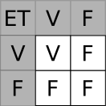
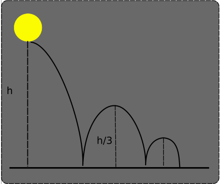

Conditions et boucles en 
Structures conditionnelles
Comparateurs et appartenance
En Python, comme dans de nombreux langages, on utilise les comparateurs et opérateurs d'appartenance :
==: comparateur d'égalité ;!=: comparateur de différence;<,<=,>,>=: comparateurs d'ordre ;in,notin: opérateurs d'inclusion.
Evaluation des opérateurs de comparaisons et d'inclusion
Les expressions contenant ces opérateurs sont évaluées par l'interpréteur Python comme des valeurs de type booléen ( donc True ou False).
Exemples
-
Egalité :
>>> 5 == 2.0+3.0 True -
Inégalités :
>>> 4 != 2+3 True -
Ordre :
>>> 7 < 5 False >>> 7 >= 7 TrueLes relations d'ordre ne sont pas limitées aux nombres, puisqu'on peut comparer des chaines de caractères grâce à l'ordre lexicographique (grosso modo en Python l'ordre alphabétique, les majuscules étant situées avant les minuscules) :
>>> 'ABC' < 'DEFGH' True >>> 'JKLMN' < 'OPQ' True >>> 'toto' < 'Toto' False >>> 'électricité' > 'electricite' TrueL'ordre des caractères dépend de leur position dans la table
UTF-8, que nous étudierons plus tard dans l'année mais dont voici un extrait :
-
Appartenance :
>>> 'to' in 'Toto' True >>> 'TO' in 'Toto' False >>> 5 not in [0, 1, 2, 3, 4] # On utilise une structure de liste (objets entre crochets et séparés par des virgules) True
Opérations logiques
Il est souvent nécessaire de vérifier que plusieurs conditions soient vérifiées en même temps, ou bien qu'au moins une condition parmi plusieurs soit vérifiée. On utilisera aussi souvent la négation d'une condition.
Pour combiner ainsi plusieurs conditions ensembles, on va utiliser la logique booléenne et les opérateurs NON, ET et OU:
-
NONopérateur qui renvoieVraisi la condition passée estFaux, et réciproquement. En python on utilise l'opérateurnot:>>> not(True) False >>> not ('a' in 'abc') False >>> not ('A' in 'abc') True >>> 2*5 < 50 True >>> not(2*5 < 50) False -
ETqui renverraVraisi les deux conditions sont simultanémentVrai, comme présenté dans la table de vérité ci-dessous :
En python on utilisera l'opérateur
and.>>> 5<2 and 5<7 False >>> 2<5 and 2<7 True >>> 2<5 and 2>7 False >>> 2>5 and 2>7 False -
OUqui renverraVraisi au moins une des deux conditions estVrai, comme présenté dans la table de vérité ci-dessous :En python on utilisera l'opérateur
or.>>> 5<2 or 5<7 True >>> 2<5 or 2<7 True >>> 2<5 or 2>7 True >>> 2>5 or 2>7 False
Une erreur courante
Supposons qu'on ait besoin de savoir si le nombre a est égal à 0 ou à 1. Il serait assez naturel d'écrire :
a == 0 or 1
En effet, testons plusieurs fois les lignes suivantes dans le terminal ci-dessous, en utilisant les valeurs suivantes pour a : 0, 1 et 5.
Les trois expression ne renvoient pas True, True et False comme on pourrait s'y attendre, mais 1, 1 et 1 (Ce qui est équivalent à trois True).
En effet les expressions utilisant l'opérateur or ou l'opérateur and sont évaluées en utilisant deux booléens :
bool1 OR bool2
Quand l'interpréteur Python évalue a == 0 or 1, il évalue :
a == 0comme booléen ;- puis
1comme booléen. Or en Python1est évalué commeTrue.
Donc quelle que soit la valeur de a, le deuxième opérande de l'opérateur or sera True. D'après la table de vérité, le résultat sera donc toujours True.
Une bonne pratique
Concernant l'écriture d'expressions contenant or ou and, une bonne pratique est de toujours reformuler notre première idée. Avec l'exemple précédent :
- Première idée :
adoit être égal à0ou1; - Reformulation :
adoit être égal à0ouadoit être égal à1; -
Code Python correct :
a == 0 or a == 1
Conditions sur les nombres entiers
On considère un objet de type int dont le nom est nb. Que faut-il écrire pour :
- Le nombre
nbest égal à5ou7? - Le nombre
nbest supérieur ou égal à5et strictement inférieur à7? - Savoir si le nombre
nbest un nombre pair et strictement supérieur à 50 ? - Savoir si le nombre
nbest un nombre pair ou un multiple de 3 ? - Savoir si le nombre
nbappartient à l'intervalle \([-13 ; 25]\) ? - Savoir si le nombre
nbn'appartient pas à l'intervalle \([-13 ; 25]\) ?
nb == 5 or nb ==7nb>= 5 and nb <7nb%2 == 0 and nb > 50nb%2 == 0 or nb%3 == 0nb >= -13 and nb <= 25(et en python, on a aussi la possibilité d'écrire13<= nb <= 25)nb<13 or nb >25ounot(nb >= -13 and nb <= 25)ou en pythonnot(13<= nb <= 25)
Vous pouvez tester les conditions ci-dessus en exécutant le code suivant, qui crée un objet int aléatoire entre -20 et 70, puis en vérifiant en affichant la valeur de nb
Exercice
Le code suivant est-il correct d'un point de vue logique ?
'toto' and 'plage' in 'toto va à la plage'
Non, il faut utiliser :
'toto' in 'toto va à la plage' and 'plage' in 'toto va à la plage'
Pour les cracks : évaluation au plus court
Dans une évaluation de condition possédant un ou plusieurs opérateurs and et or, l'interpréteur python évalue de gauche vers la droite. Si les évaluations déjà effectuées permettent déjà de donner le booléen réponse, l'interpréteur python s'arrête automatiquement. Ainsi :
5 < 7 or 5 < 9:5 < 7renvoieTrue, et l'opérateurorrenvoieTruedès qu'une des deux condition est vérifiée. La condition5 < 9n'est donc pas évaluée, ce serait inutile.5 < 7 and 5 < 9:5 < 7renvoieTrue, et l'opérateurandrenvoieTruedès que les deux conditions sont vérifiées. La condition5 < 9est donc obligatoirement évaluée.5 < 2 and 5 < 9:5 < 2renvoieFalse, et l'opérateurandrenvoieFalsedès qu'une des deux condition n'est pas vérifiée. La condition5 < 2n'est donc pas évaluée, ce serait inutile.5 < 9 and 5 < 2:5 < 9renvoieTrue, et l'opérateuranddoit obligatoirement évaluer5 < 2pour conclure.
Les deux derniers exemples montrent l'importance de l'ordre dans les opérations booléennes, certains ordre permettant de gagner du temps de calcul.
Structures conditionnelles
Syntaxe des structures conditionnelles
En Python, on utilise pour les structures conditionnelles la syntaxe suivante :
if condition1 :#Le : est important !
#bloc de une ou
#plusieurs lignes
#indentées ( avec la touche tabulation)
elif condition2 :
#encore un autre bloc
elif condition3 :
#etc
#etc
#etc
.
.
.
else :
#et enfin un dernier bloc si aucune des conditions précédentes n'a été réalisée.
Les différents blocs d'instructions doivent être correctement indentés (c'est-à-dire correctement décalés vers la droite).
La règle de bonne conduite est d'utiliser 4 espaces par indentation (qu'il est souvent possible d'obtenir grâce à la touche tabulation Tab ). Il est réellement fondamental de respecter les indentations, celles-ci étant pour l'interpréteur Python le signal de déclenchement d'un bloc de code indépendant. Par exemple, le code ci-dessous renverra une erreur :
nb = int(input("Entrez un nombre entre 1 et 100 :"))bksl-nlif nb<1 :bksl-nl print("Votre nombre est trop petit")bksl-nlelif nb>100 :bksl-nl print("Votre nombre est trop grand")bksl-nlelif nb < 50 :bksl-nl nb = nb + 50bksl-nl print(f"Le nombre final est {nb}")bksl-nlelse :bksl-nl nb = nb - 50bksl-nl print(f"Le nombre final est {nb}")bksl-nlprint("FIN")bksl-nl
On peut aussi noter qu'il est possible dans certaines situations de se passer des instructions elif et else, mais cela peut conduire à certains effets de bords qui peuvent être parfois dommageables. Testez par exemple le code suivant :
nb = int(input("Entrez un nombre entre 1 et 100 :"))
if nb<1 :
print("Votre nombre est trop petit")
if nb>100 :
print("Votre nombre est trop grand")
if nb < 50 :
nb = nb + 50
print(f"Le nombre final est {nb}")
if nb>= 50 :
nb = nb - 50
print(f"Le nombre final est {nb}")
print("FIN")
Les structures conditionnelles peuvent aussi être imbriquées, en indentant à plusieurs reprises :
nb=int(input("Entrez un nombre entier, positif ou négatif :"))
if nb>0 :
print("Votre nombre est positif !")
if nb%2==0 :
print("Et c'est un multiple de 2 !")
else :
print("Et ce n'est pas un multiple de 2 !")
else :
print("Votre nombre est négatif !")
Entrez un nombre entier, positif ou négatif :9
Votre nombre est positif !
Et ce n'est pas un multiple de 2 !
Exercice sur les structures conditionnelles
Un début de Pierre-Feuille-Ciseaux
On veut écrire un programme qui permettra de jouer plus tard à Pierre-Feuille-Ciseaux contre l'ordinateur.
Pour l'instant on considère que l'ordinateur ne joue qu'une seule chose : Pierre.
Écrire un code Python dans la zone de script de Thonny (que vous sauvegarderez sous le nom PFC.py) qui :
- Demande à un utilisateur×trice de saisir
p(pour Pierre),f(pour Feuille) ouc(pour Ciseaux). - Donne le résultat du jeu contre l'ordinateur ayant joué Pierre.
Attention ! Il faut aussi signaler à l'utilisateur×trice qu'il/elle a fait une erreur s'il/elle n'a saisi aucune des trois possibilités.
Premières étapes de Devine Nombre
On veut réaliser un jeu de «Devine Nombre», dans lequel l'ordinateur tirera un nombre au hasard entre 1 et 100, et dans lequel le joueur/la joueuse proposera plusieurs possibilités, et aura un feedback du type «Trop grand» ou «Trop petit». L'objectif est de deviner le plus rapidement possible le nombre sélectionné par l'ordinateur.
Pour l'instant, nous allons nous concentrer sur une seule étape : le joueur/la joueuse donne un nombre, et l'ordinateur lui répond.
Vous aurez besoin de tirer au hasard un nombre entre 1 et 100. Pour ce faire, vous devrez, dans le code insérer les deux lignes suivantes :
import random
nb = random.randint(1, 100)
nb.
Vous sauvegarderez votre script sous le nom devineNombre.py.
Boucles
Boucle non bornée while
Boucle bornée
On utilise une boucle bornée lorsqu'on veut ré-exécuter un bloc de code tant qu'une condition est vérifiée.
La boucle while (appelée Tant que en pseudo-code), possède la structure suivante en Python :
while condition :#Encore une fois, ne pas oublier le signe :
#bloc de code
#indenté
Le bloc de code situé sous l'instruction while sera exécuté tant que la condition donnée sera vraie, comme dans l'exemple donné ci-dessous :
nb= int(input("Donnez un nombre entier positif:"))bksl-nlpuissance = 0bksl-nlwhile nb//2 >=1 :bksl-nl puissance = puissance +1bksl-nl nb=nb//2bksl-nlprint(f"Votre nombre est supérieur ou égal à 2 puissance {puissance} et\bksl-nl inférieur à 2 puissance {puissance+1}")bksl-nl# Notez l'utilisation de pour éviter d'avoir une ligne trop longue.bksl-nl
Rebond d'une balle
On considère une balle de rayon \(5\) cm lancée d'une hauteur \(h\). La balle rebondit à \(\dfrac{1}{3}\) de la hauteur précédente à chaque rebond. On considère que la balle arrête de rebondir lorsque le rebond est inférieur à \(5\) cm.

Écrire un script Python qui demande à l'utilisateur×trice une hauteur de départ (en cm) puis donne le nombre de rebonds de la balle.
Boucle bornée : for
Boucle bornée
On utilise une boucle bornée lorsqu'on connait à l'avance le nombre de fois où un bloc de code doit être exécuté.
La boucle classique for
Dans de nombreux langages de programmation, une boucle for (Pour en pseudo-code) fonctionne en :
- Créant un compteur ( ou itérateur), nommé traditionnellement
i; - en initialisant ce compteur à une valeur de départ ;
- en augmentant à chaque tour de boucle le compteur d'une certaine valeur appelée le pas (step en anglais);
- en continuant tant qu'une certaine valeur limite n'est pas atteinte (ou qu'une condition est respectée).
En Python, on utilisera la structure suivante :
for i in range(depart, limite, pas) :
# Bloc de code
iest le compteur (ou itérateur). C'est une variable donc on peut choisir son nom selon les règles de nommages habituelles ;departest la valeur de départ à laquelle est initialiséei;limiteest la valeur telle que siiest supérieure ou égale à cette valeur, la boucle s'arrête.pasest le pas, c'est-à-dire la valeur d'augmentation deià chaque tour.
Même s'il s'agit d'une simplification abusive de ma part, vous pouvez considérer que la fonction range() construit l'ensemble des valeurs que peut prendre le compteur i, et fait passer i d'une valeur à l'autre à chaque tour de boucle.
Exemple de boucle for
Prenons comme exemple la boucle suivante :
for i in range (12,24,3) :
print(i, end=" ")
i est 12, la valeur limite est 24, et le pas est 3.
L'exécution du programme donnera donc en sortie :
12 15 18 21
Cette boucle for est donc exactement équivalente au code suivant :
i = 12
while i < 24 :
print(i)
i = i + 3
Exercice
On considère le code suivant :
for toto in range(15,30,5) :
# Bloc de code
...
Combien y aura-t-il de répétitions du bloc de code dans cette boucle for ?
Il y aura une exécution du bloc de code pour chacune des valeurs suivante de toto : \(15\), \(20\) et \(25\). Lorsque toto prend la valeur 30, la boucle est arrêtée et le bloc n'est pas exécuté.
Raccourcis d'écriture
Il existe des facilités de programmation qui permettent de simplifier l'écriture de la fonction range :
- Si le pas est de
1, on peut l'omettre :range(12, 17)est équivalent àrange(12, 17, 1), et crée la liste12, 13, 14, 15, 16; - Si la valeur de départ est
0, et le pas de1, on peut les omettre :range(5)est équivalent àrange(0, 5, 1)et crée la liste0, 1, 2, 3, 4(ce qui permet d'avoir exactement 5 tours de boucle) ;
Attention, il n'est pas possible de donner le pas sans donner la valeur de départ ! range(0, 45, 3) ne peut pas être raccourci !
La boucle for en Python
En python, la boucle for peut aussi être utilisée comme une boucle foreach (Pour chaque en pseudo-code) :
Testez par exemple le code suivant :
texte ='Un texte quelconque'bksl-nlfor lettre in texte :bksl-nl if lettre in 'aeiouy':bksl-nl print(f"Tiens, j'ai vu la voyelle {lettre}.")bksl-nl
Le compteur lettre prendra successivement chaque (each) caractère de la chaîne texte, soit U, n, (1 espace), t, ..., jusqu'à ce que le parcours de la chaîne soit terminé.
Dans ce cas, il n'y a pas de pas, on parcourt chaque élément d'un ensemble donné. Nous verrons plus tard dans l'année qu'on peut parcourir ainsi des listes, des tuples, etc.
Exercice
Comment faire pour prendre en compte les majuscules dans le compte des voyelles ?
Exercices
Conditions, saisies et affichages
- Écrire un programme qui demande un nombre à l'utilisateur, puis affiche le carré de ce nombre.
- Écrire un programme qui demande l'heure qu'il est (un nombre pour les heures, un nombre pour les minutes et un pour les secondes). Cet algorithme indiquera en outre si l'heure donnée est valide, c'est-à-dire que les nombres sont bien des entiers, et qu'ils sont compris entre 0 et 23 ou 0 et 59.
- Compléter le programme précédent afin que l'algorithme donne l'heure qu'il sera 10 minutes après l'heure saisie.
- Une année est dite bissextile si cette année est divisible par 4, sauf si elle est divisible par 100 et pas par 400. Construire un programme qui dit si une année saisie par un utilisateur·trice est bissextile ou non.
- Écrire un programme qui demande les coefficients \(a\) et \(b\) d'une fonction affine, et qui donne son nombre de racines et leurs valeurs éventuelles. Attention aux cas particuliers !
- Étendre le programme précédent pour la résolution d'équations du type \(ax+b = cx+d\), où \(a,b,c,d\) sont des entiers saisis par l'utilisateur·trice.
- Pour les élèves ayant encore des maths, reprendre le problème n°5 pour un trinôme du second degré.
A venir !
Exercices sur les boucles for et while
-
Écrire un programme qui affiche les 20 premiers nombres de la table de multiplication d'un entier choisi par l'utilisateur·trice, sous la forme (avec choix de
7par l'utilisateur) :7 x 0 = 0 7 x 1 = 7 7 x 2 = 14 ... -
Écrire un programme qui affiche les restes des divisions euclidiennes des \(200\) premiers entiers par \(7\).
- Écrire un programme qui affiche les restes des divisions euclidiennes des \(300\) premières puissances de \(2\) par \(9\). Que constate-t-on ?
- Écrire un programme qui affiche une suite de 12 nombres dont chaque terme soit égal au triple du nombre précédent, le nombre de départ étant choisi par l'utilisateur·trice.
-
La suite de Syracuse est définie ainsi :
- on part d'un nombre entier choisis par l'utilisateur.trice ;
- si le nombre est pair, on le divise par 2, et on recommence avec le résultat ;
- sinon on le multiplie par 3 et on ajoute 1, et on recommence avec le résultat.
Construire un programme qui affiche les 30 premiers nombres de la suite de Syracuse à partir d'un nombre entier choisis par un·e utilisateur·trice.
-
Écrire un programme qui demande un nombre entier entre 1 et 10 à l'utilisateur·trice, et qui poursuit cette demande tant que l'utilisateur·trice n'a pas exactement fait ce qui lui était demandé ( on appelle ce type de programme dumbproof).
A venir !
TP Turtle
Faire le TP suivant sur Capytale